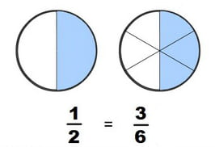
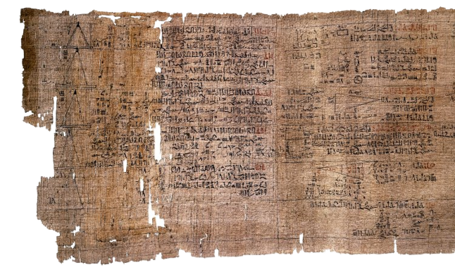

Una de las peculiaridades que plantean las fracciones es que una misma medida (un mismo número) puede expresarse de formas distintas. Así, media hora (\(\dfrac{1}{2}\) h) puede expresarse también como \(30\) minutos, \(\dfrac{30}{60}\) de hora, o como dos cuartos de hora, (\(\dfrac{2}{4}\) h). Esto, en principio, puede considerarse un trastorno, pero precisamente esta propiedad es la que nos permite comparar, sumar y restar fracciones.
Fracciones equivalentes
| Llamamos fracciones equivalentes a aquellas que representan la misma cantidad. |
Para comprobar que dos fracciones son equivalentes multiplicamos en cruz el numerador de la primera por el denominador de la segunda, y si obtenemos el mismo resultado que al multiplicar el denominador de la primera por el numerador de la segunda, entonces las fracciones son equivalentes.

Operaciones con fracciones.
Haz clic en las pestañas para ver los diferentes apartados de la explicación sobre cómo operar con fracciones:
Vídeo. Operaciones con fracciones.
Las operaciones suma, resta y producto con fracciones tienen las mismas propiedades que las operaciones con números enteros y se mantiene la misma jerarquía para las operaciones combinadas.
En el pasado tema hicimos mucho hincapié en la importancia de adquirir soltura en los cálculos y de memorizar los procedimientos que nos llevan a la solución. Con las fracciones ocurre exactamente lo mismo, ya que el éxito en este tipo de operaciones está en ser cuidadoso y meticuloso en los procedimientos. Por ello, te dejamos una pequeña lista de reproducción con 4 vídeos muy sencillos que te ayudarán a interiorizar y mecanizar estas operaciones.
Ejercicio
Haz clic en cada tarjeta para darle la vuelta y ver la solución explicada paso a paso:
Ejemplo.
Resuelve las siguientes operaciones combinadas con fracciones:
🔹 Primer caso:
\[\left(\dfrac{3}{4} + \dfrac{1}{2}\right) \cdot \left(\dfrac{5}{3} - \dfrac{1}{6}\right)\]🔹 Segundo caso:
\[\left(-1 + \dfrac{3}{4} - \dfrac{1}{3}\right) : \left(2 - \dfrac{1}{4}\right)\]Texto
Tutor: Operaciones Combinadas con Fracciones
Ejemplos. Fracción de un número.
Ya hemos dicho que las operaciones aparecen en muchas situaciones reales, pero si te paras a pensar descubrirás que en muchos de los casos aparece ligada a la preposición "de". Por ejemplo: "un tercio de los diputados del congreso", "una cuarta parte del dinero es destinado al consumo de alimentos de primera necesidad"... ¿Cómo se calcula la fracción de un número?
Veamos, a través de varios ejemplos, cómo calcular la fracción de un número.
🔹 Haz clic en las pestañas para ver cada uno de los problemas resueltos paso a paso:
Ejercicio
Un profesor sabe que en su próxima clase encontrará más chicas que chicos. \(\dfrac{5}{7}\) del grupo son chicas y en total son 28 personas. ¿Cuántas chicas hay en esa clase?
Ejercicio
Meki tiene 250 € ahorrados. Piensa gastarse \(\dfrac{3}{5}\) de su dinero en ropa, \(\dfrac{7}{10}\) de lo que aún le quede en música y 30 € en un libro. Lo que le sobre se lo regalará a su hermana. ¿Es muy generoso con su hermana?
Selecciona
Resuelve los problemas y responde a las preguntas del cuestionario.
Curiosidad
Está documentado que los babilonios ya conocían y operaban con fracciones hacia el \(2000\) a.C. Su forma de representarlas era muy parecida a la actual, con la curiosidad de utilizar sólo las potencias de \(60\) como valores del denominador.
En el Papiro Rhind de los egipcios hallamos fracciones propias con la unidad como numerador (unitarias).
Las fracciones unitarias estaban escritas utilizando un símbolo en forma de boca y el denominador debajo de este símbolo. Excepto para la fracción \(\dfrac{2}{3}\), que tenía un símbolo especial, todas las otras fracciones con numerador diferente a \(1\) las escribían como suma de fracciones unitarias.
Por ejemplo, en vez de \(\dfrac{3}{5}\) escribían \(\dfrac{1}{2}+\dfrac{1}{10}\) o para \(\dfrac{6}{7}\) escribían \(\dfrac{1}{2}+\dfrac{1}{4}+\dfrac{1}{14}+\dfrac{1}{28}\).

En la actualidad, se ha llegado a la conclusión de que los hindúes escribían fracciones como lo hacemos hoy, pero sin la barra horizontal, elemento que fue invención árabe.